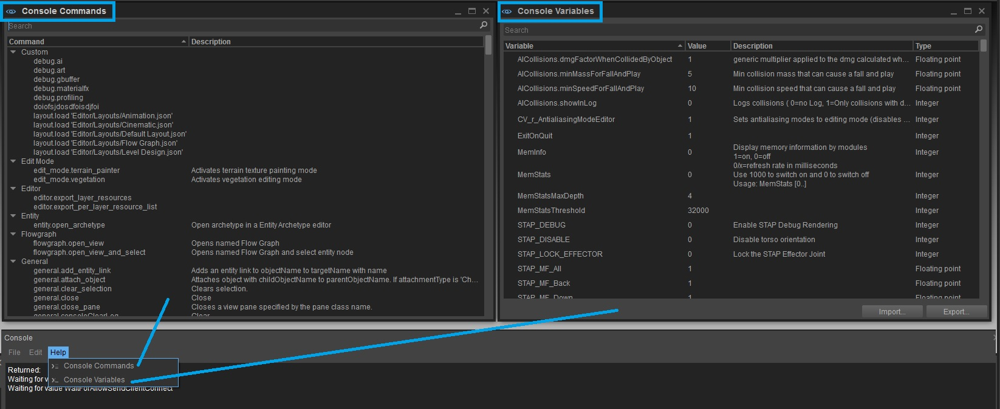
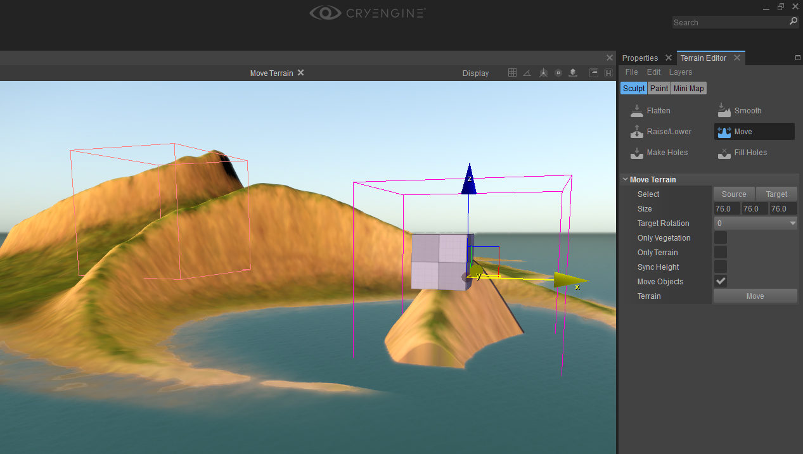
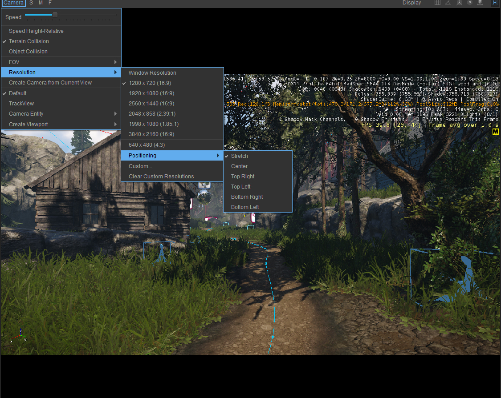

Основные моменты выпуска
CRYENGINE 5.1.1 содержит исправления и улучшения в способе навигации пользователей по редактору Sandbox. В этом выпуске вас ждут более эффективные меню, более плавное движение камеры и многое другое!
Меню справки консоли редактора: Теперь пользователи увидят меню «Справка» в подключаемом модуле консоли с пунктами меню «Консольные переменные» и «Консольные команды».

Дополнительные параметры движения камеры в Sandbox Редактор: В режиме редактора добавлены дополнительные параметры движения камеры. Они расположены вместе с другими параметрами (стандартными переключателями UI) в раскрывающемся меню «Камера» над основным окном просмотра.
- Скорость относительно высоты: (новая опция) При включении регулирует скорость движения камеры в зависимости от высоты камеры над местностью или объектами. Скорость камеры умножается на высоту в метрах (ограничена диапазоном 1–1000). Позволяет точно перемещаться, находясь близко к земле, или быстро перемещаться к различным частям уровня без необходимости постоянно регулировать ползунок скорости камеры.
- Столкновение с местностью: (существующая опция) Столкновение камеры с местностью при движении.
- Столкновение объектов: (новая опция) Столкновение камеры с физизированными объектами при движении - камера будет скользить по прокси физики, но не проникая. Эта опция также влияет на Скорость относительно высоты: когда включено; Высота камеры измеряется над местностью или объектами. Когда выключено; Высота камеры измеряется только над местностью.
Очистка редактора ландшафта: Улучшения удобства использования Terrain Tool. «Вид» был удален из меню «Инструменты» — вид сверху вниз не работал должным образом. В будущем это будет настроено для работы в качестве стандартного вида «Сверху». Кнопки «Копировать» и «Переместить» были исправлены, а UI изменен — теперь есть флажок «Переместить объекты» — он делает именно то, что вы ожидаете, а также реализована операция «Отменить».

Оптимизированное управление разрешением видового экрана: Ранее Содержимое видовых экранов с пользовательским разрешением можно было растягивать только до краев окна, чтобы сохранить соотношение сторон. Теперь при настройке пользовательского разрешения для виджета области просмотра доступны некоторые новые параметры, которые позволяют пользователям размещать содержимое игры в области просмотра, но без растягивания.

Редактор
Генеральный редактор
- Новый: Добавлено перетаскивание файлов для селекторов ресурсов и импорта сеток.
- Новый: Ландшафт: добавлена возможность отмены/повтора для всех операций с местностью, в которых это отсутствовало (перемещение, выравнивание...).
- Новый: добавлены дополнительные параметры позиционирования (без растягивания) для пользовательских разрешений. Позволяет целевым пикселям рендеринга соответствовать 1 к 1 пикселям экрана.
- Новый: В меню справки консоли добавлены консольные переменные и консольные команды.
- Новый: Устаревший «Эксклюзивный режим» для Designer Tool (до дальнейшего уведомления).
- Новый: UI теперь не перестает отвечать на запросы во время загрузки уровня.
- Новый: Поддержка устройств 3Dconnexion.
- Новый: Настройки уровня теперь поддерживают отмену/повтор действия.
- Новый: добавлена кнопка с информацией о быстрой отладке в заголовке области просмотра, аналогичная SandboxLegacy.
- Исправлено: улучшена стабильность полноэкранного режима.
- Исправлено: Выделите хрупкие и отсутствующие параметры поверхности, которые не установлены должным образом после настройки свойств.
- Исправлено: Размер и отображение полосы прокрутки дерева свойств.
- Исправлено: Объекты формы корректно обновляются при признании недействительными их преобразований.
- Исправлено: UI перестает отвечать после закрытия окна выбора материала в SandboxLegacy.
- Исправлено: Добавлен недостающий инструмент выбора материалов.
- Исправлено: Цвет ползунка
- Исправлено: Область просмотра: раскрывающиеся меню отображения меню не работают должным образом.
- Исправлено: Terrain: переход в игровой режим с помощью Ctrl+G переключает настройки высоты инструмента «Поднять/Опустить» с положительных на отрицательные значения.
- Исправлено: Переполнение стека при смене активного материала, когда открыто окно сопоставления UV.
- Исправлено: Редкий сбой при удалении родительского объекта.
- Исправлено: Сериализация переменных типа оборудования
- Исправлено: повторно добавлен отсутствующий пункт меню «Отображение столкновений объектов».
- Исправлено: Environment Editor: Скорость теперь ограничена.
- Исправлено: Неверное вычисление ширины, в результате чего временная шкала не показывает всю продолжительность анимационного клипа в пределах Character Tool.
- Исправлено: Сбой при удалении объектов камеры с целями.
- Исправлено: Сбой, когда смарт-объектам не удается инициализировать свои сценарии.
- Исправлено: Сбой при щелчке правой кнопкой мыши по 3D-текстуре в Material Editor, когда ландшафта не существует.
- Исправлено: кнопки PSD в Material Editor не отображают ошибку, если PSD не найден.
- Исправлено: Сбой при использовании диалоговых окон файлов в режиме просмотра базы данных и редакторе бликов.
- Исправлено: Сохранение удаленных ярлыков относительно настроек по умолчанию. Добавлены подсказки к кнопкам редактирования. Исправлено удаление пользовательских команд (через контекстное меню и ярлык удаления)
- Исправлено: Диалоговое окно выбора каталога — теперь правильно принимает каталоги.
- Исправлено: Trackview: вкладка Trackview не очищается при выходе из редактора Trackview.
- Исправлено:Trackview: Кнопка записи иногда перестает работать - хотя она подсвечена (разбивает сцену)
- Исправлено: TrackView: Кнопка записи выделена, хотя режим неактивен, и наоборот.
- Исправлено: TrackView: поворот дорожек не работает должным образом, если угол по оси Y близок к 90°.
- Исправлено:TrackView: Не работает множественный выбор
- Исправлено: TrackView: Копирование/вставка ключей должно быть более надежным.
- Исправлено:TrackView: Отключение некоторых узлов не работает
- Исправлено: Sandbox: выбранный оттенок значков во всех древовидных представлениях. Теперь тонирован согласно qproperty-selectedTreeViewTint в qss. Сделано так, что QAdvancedItemDelegate удаляет все предыдущие оттенки из значков и растровых изображений и применяет новый пользовательский оттенок в виде дерева.
- Исправлено: Иногда эффекты частиц приводили к сбою редактора при закрытии.
- Исправлено: Редактор кривых: невозможно выбрать несколько ключевых кадров с помощью Shift или Ctrl.
- Изменено: используйте значки для обозначения скорости камеры. Нажатие на них также вызовет ползунок скорости.
- Изменено: Именование объекта камеры в меню камеры — от «Объект» до «Объект камеры».
Рендерер
Общий рендерер
- Исправлено: сбой SVOGI в DX12.
- Исправлено: Интерполяция ветровых зон (изгиб растительности)
- Исправлено: Карта теней для LightBeam перевернута.
- Исправлено: Сбой, когда для шейдера LightBeam установлено значение Light Entity.
- Исправлено: Сбой в CRenderMesh::AddShadowPassMergedChunkIndicesAndVertices
- Исправлено: Коллизия хэшей шейдеров во время генерации кэша шейдеров в автономном режиме.
- Исправлено: Улучшено качество временной фильтрации GI за счет использования векторов скорости сцены.
- Исправлено: LINUX: Ошибка шейдера: не удалось скомпилировать шейдер HW 'ShadowMaskGen@ReprojectShadowMap'
Двигатель
Общие сведения о двигателе
- Новый: добавлены LICENSE.md и README.md.
- Новый: Окно сообщения подтверждения больше не отправляет ESYSTEM_EVENT_CHANGE_FOCUS, а очищает клавиши ввода, как изначально предполагалось.
- Исправлено: Обходной путь для сбоя загрузки уровня Linux.
WAF
Исправлено: Переопределение относительного пути
3D-движок
- Исправлено: SVOGI исправление ошибок и улучшения прототипа аналитических окклюдеров.
- Исправлено: Отсутствует тень от слитой травы.
- Исправлено: Скрыть/показать функциональность сеток static (при использовании с постоянным RenderObjects)
Частицы
- Новый: На объектах без свойств будет отображаться текст «Нет свойств».
Инструменты
- Исправлено: Обновите Brofiler 1.1.2, чтобы избежать ложного обнаружения вредоносного ПО некоторыми антивирусными сканерами.
Действие
Общие действия
- Исправлено: Исправлен сбой клиента при подключении к серверам, на которых не было доступной CVar sv_pacifist.
Аудио
Аудио Общие
- Новый: В реализацию FMOD добавлена функциональность PlayFile.
- Новый: Добавлен параметр в метод PlayFile (позволяет указать, локализована ли строка и какой аудиотриггер следует использовать в качестве ссылки на воспроизведение).
- Новый: Добавлена реализация PlayFile для SDL_mixer.
- Рефакторинг: PlayFile теперь возвращает логическое значение, указывающее, был ли отправлен запрос к промежуточному программному обеспечению.
- Оптимизированный: иметь централизованное место для удаления неиспользуемых AudioObjects вместо отдельных проверок во многих местах. В качестве побочного эффекта исправлен сбой в FMOD, когда AudioEventPool имел размер 0.
- Оптимизированный: ResetAudioObject и ResetAudioEvent вызываются перед вызовом Destroy для этих объектов.
- Оптимизированный: SDL_mixer теперь использует новые параметры PlayFile.
- Исправлено: Конфигурация без uber
DRS (система динамического реагирования)
- Новый: каждая строка диалога теперь имеет свойство «StandAloneFile», которое можно использовать для прямой ссылки на голосовые ресурсы на диске.
- Исправлено: Отсутствуют значки в версии Launcher.
- Исправлено: Отсутствуют значки в версии WebLauncher.
AI Система
- Рефакторинг: GraphNodeManager::GetNode больше не возвращает фиктивный узел, а скорее утверждает, что нужный узел существует, что дает возможность выяснить, что может пойти не так на стороне вызывающего абонента.
Игра
- Исправлено: Аппаратная мышь не учитывает предпочтения системного курсора.
- Исправлено: Сбой при использовании диалоговых окон файлов с использованием фильтра подстановочных знаков/всех файлов.